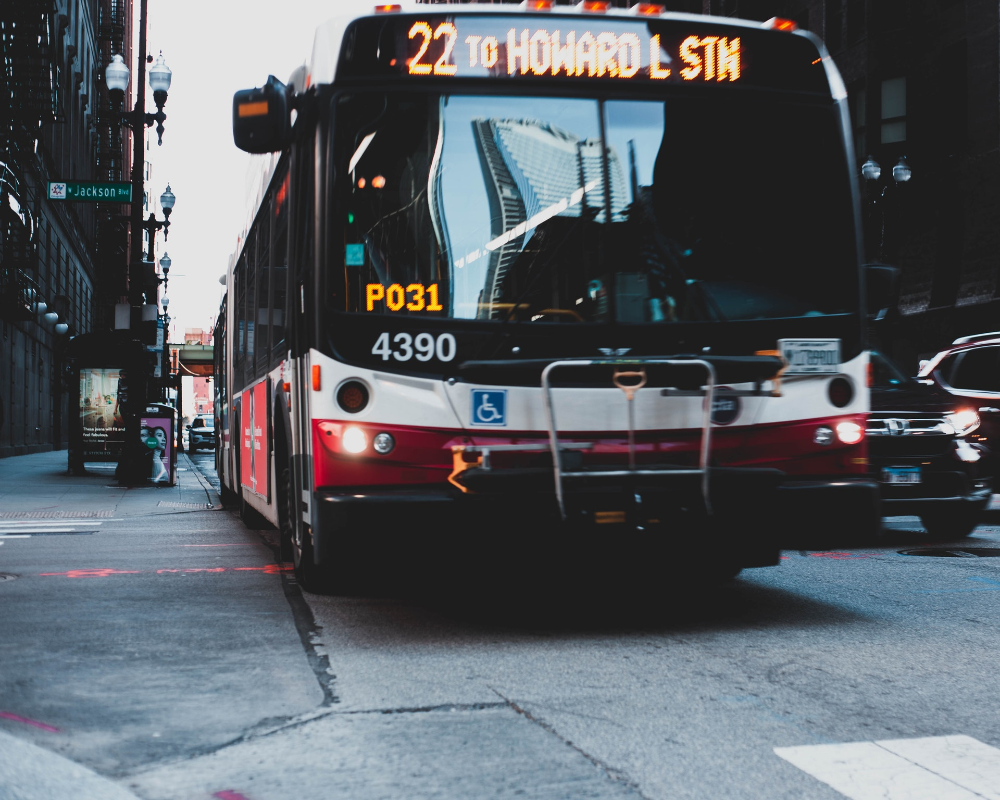

 With continued economic development, Dhaka (Bangladesh's capital) is beginning to experience severe traffic congestion. This is impacting the quality of life for inhabitants of the metropolitan area, the nation's largest. Many government and public-transport agencies drafted policies, undertook projects and implemented programmes to solve the problem. The Dhaka Integrated Transport Studies, conducted by the Ministry of Planning in 1991–1994, found that the uncoordinated activities of Dhaka City Corporation (DCC), Rajdhani Unnayan Kartripakkha (RAJUK) and the Bangladesh Road Transport Authority (BRTA) did not alleviate the problem and there was no one organisation responsible for improving the city's transport and traffic problems. With financial assistance from the World Bank, the government of Bangladesh created the Dhaka Transport Coordination Board in 1998. An urban transport plan was commissioned with the US consultant Louis Berger Group and Bangladesh Consultant Ltd (BCL). Introduced in 2008, the comprehensive transport plan for the Greater Dhaka City and its adjoining areas (such as Tongi, Gazipur, Savar, Narayanganj, Keraniganj, Narshingdi and Manikganj) covered around 1,530 square miles (4,000 km2). The plan looked at 15 key policy issues, including safety, pedestrian preferences, public transport, non-motorised transport, travel demand management and mass transit systems, and almost 70 policy recommendations were made. Ten comprehensive transport strategies were evaluated, using a baseline of no Bus rapid transit (BRT) or metro service, and a number of alternatives were explored.[1] The adopted plan included roads, a three-line Mass Rapid Transit (MRT) and three-line BRT. It included provisions for 54 new roads in and around the city, three-part elevated expressways and a circular waterway programme.[2] Prime Minister Sheikh Hasina inaugurated Bangladesh's highest road, Thanchi-Alikadam Road in Bandarban District, in a 2015 video conference from Dhaka. Construction of The road, which is 2,500 feet (760 m) above sea level, was built under army supervision at a cost of ৳1.17 billion and is aiding development, education and health in the hill tracts.